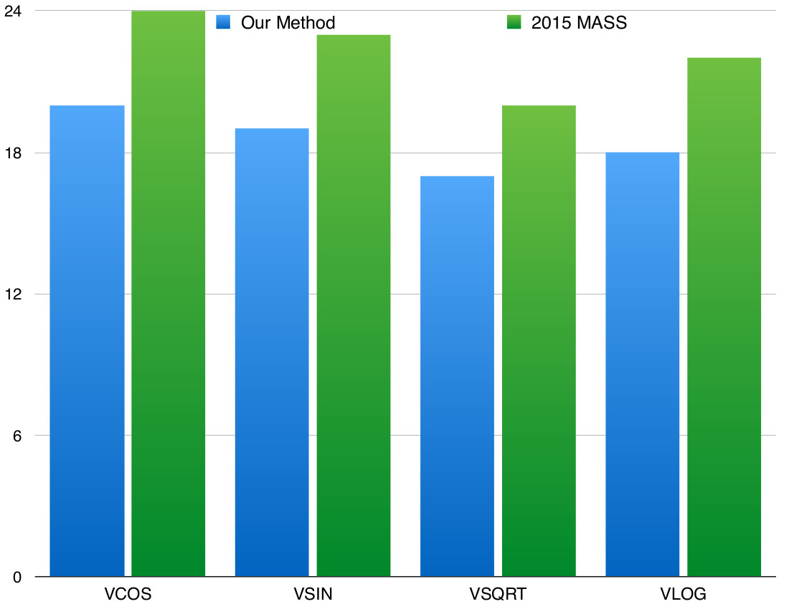
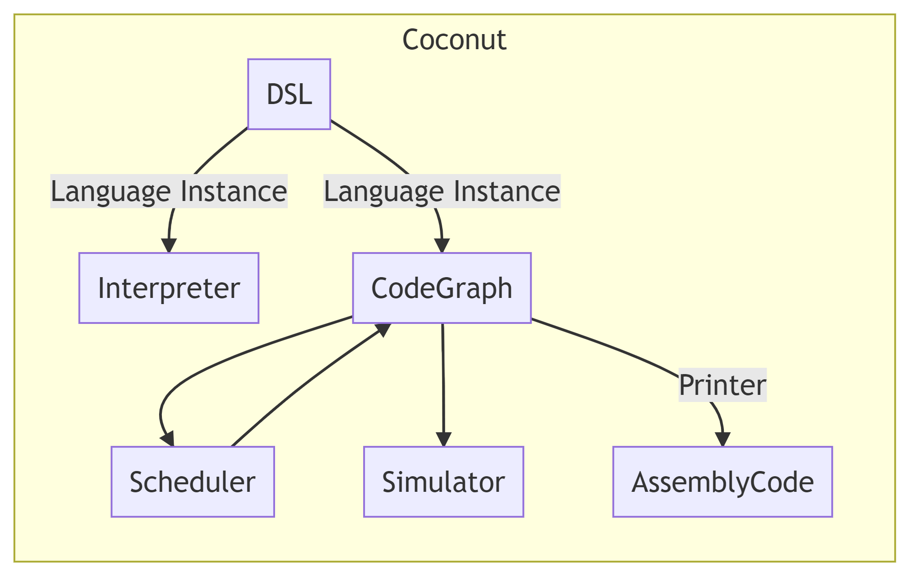
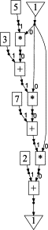
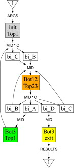

Key Idea Encode choice heuristics as penalties, adjust preference between heuristics by scaling
Penalize dispatch time of instructions based on the quantity and latencies of it's dependencies
IDEA scale the IO penalty stochastically
20% speedup on select functions


Provides embedded domain specific languages for typed functional assembly
testDSL r0 r1 r2 = let r3 = add r1 r0 r4 = add r2 r0 r5 = mult r3 r4 in (r4,r5)
In order to improve COCONUT's capabilities as a rapid prototyping environment across a variety of architectures, we want it to be easily extensible in a number of dimensions:
class (Show (VR n),Show (GPR n) => ZType n where data VR n -- vector register data GPR n -- general purpose register add :: GPR n -> GPR n -> GPR n mult :: GPR n -> GPR n -> GPR n addV :: VR n -> VR n -> VR n ...
data GPR data VR class CoreISA repr where add :: repr GPR -> repr GPR -> repr GPR mult :: repr GPR -> repr GPR -> repr GPR addV :: repr VR -> repr VR -> repr VR ... class ExtendedISA repr where ...
Code Graphs (Directed Acyclic HyperGraphs encoding basic blocks) are parameterized by a Hardware instance
newtype Graph h r = Graph { ... } instance Hardware h => CoreISA (Graph h) where ...
The Hardware type class uses associated type families to provide specific hardware architecture details for simulation / printing
class Hardware h where data RegType h data HardwareST h simInstruction :: Schedule h -> RegMap h -> Instruction -> SimState h Instuction ...
Basic Blocks are encoded as Code Graphs (i.e. data flow graphs)
type CodeGraph h = HyperGraph NodeType (ResType h) (EdgeType h)

Control Flow Arrangements use Code Graphs as edges, describe control flow
type ControlFlow h = HyperGraph NodeType (ResType0 h) (CodeGraph h)
